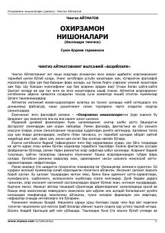

ONInsoniyatning axloqiy tanazzuli va kelajakdagi halokatli oqibatlari haqidagi falsafiy roman.
Ushbu asar insoniyatning axloqiy tanazzuli va kelajakdagi halokatli oqibatlari haqida hikoya qiluvchi falsafiy-fantastik romandir. Bosh qahramon, olim Andrey Krilsov kosmosda olib borgan tadqiqotlari orqali tug'ilajak bolalarning taqdirini oldindan ko'ra oladigan 'Kassandra tamg'asi' hodisasini kashf etadi. Roman insonning o'z qilmishlari bilan dunyoni qanday qilib oxirzamon sari yetaklayotganini chuqur tahlil qiladi.